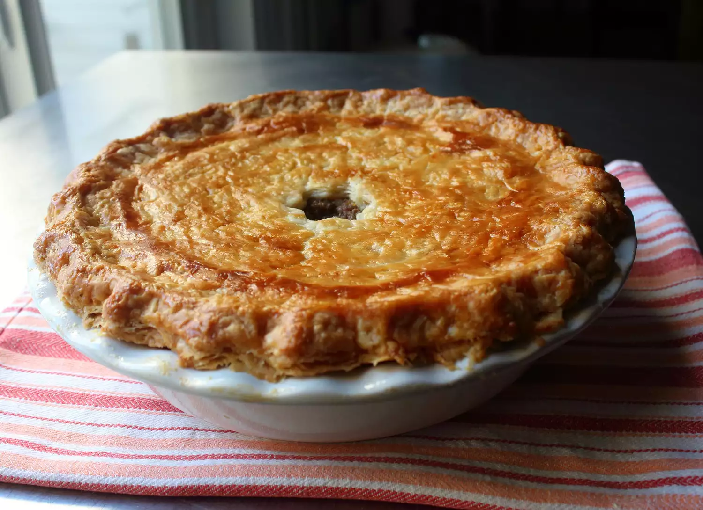

Tourtiere (French Canadian Meat Pie)

Description
Tourtière is a hearty and satisfying French Canadian meat pie that's easy to make, so it's a great choice
for a holiday main course. Visually impressive, relatively affordable, and best served at room temperature
Ingredients
Crust
- 3 cups all-purpose flour
- 2 sticks unsalted butter, sliced, frozen
- 1 teaspoon kosher salt
- 7 tablespoons ice-cold water, or as needed
- 2 teaspoons distilled white vinegar
Spice Blend
- 2 teaspoons kosher salt
- 1 teaspoon freshly ground black pepper
- 1 teaspoon dried thyme
- ½ teaspoon dried sage
- ½ teaspoon ground cinnamon
- ½ teaspoon ground ginger
- ¼ teaspoon freshly grated nutmeg
- ¼ teaspoon ground allspice
- ¼ teaspoon ground mustard
- ⅛ teaspoon ground cloves
- 1 pinch cayenne pepper
Filling & Egg wash
- 1 large russet potato, peeled, quartered
- 1 teaspoon kosher salt
- 1 tablespoon butter
- 1 large onion, finely chopped
- 1 pinch salt
- ½ cup finely diced celery
- 4 cloves garlic, crushed
- 1 pound ground pork
- 1 pound ground beef
- 1 cup potato cooking water, plus more as needed
- 1 large egg & 1 tablespoon water
Steps
- Gather all ingredients
- To make the crust: Place flour, frozen butter, and salt into the bowl of a food processor. Pulse on and off until butter breaks down to pea size, about 30 seconds. Stir together cold water and vinegar; drizzle over flour mixture. Pulse on and off until mixture is crumbly and holds together when pinched, about 10 seconds. Drizzle in more cold water if mixture is too dry.
- Transfer mixture to a work surface. Press together until it forms a ball. Flatten to a disc, wrap in plastic wrap, and refrigerate until chilled, about 1 hour.
- To make the spice blend: Mix together salt, black pepper, thyme, sage, cinnamon, ginger, nutmeg, allspice, mustard, clove, and cayenne in a small bowl; set aside.
- To make the filling: Place potatoes and 1 teaspoon kosher salt in a saucepan; cover with cold water. Bring to a boil, reduce heat, and simmer until tender, 10 to 15 minutes. Use a slotted spoon to transfer potatoes to a bowl, reserving potato cooking water in the saucepan. Mash potatoes with a potato masher until smooth; set aside.
- Melt butter in a skillet over medium heat. Add chopped onion and a pinch of salt. Cook and stir until onions turn golden, 10 to 15 minutes. Stir celery, garlic, and spice blend into the skillet with onions. Stir until onion mixture is evenly coated with spices, about 30 seconds.
- Add ground pork, ground beef, and about 3/4 cup potato cooking water to the skillet. Cook, stirring occasionally, until meat is brown and tender and most of the liquid has evaporated, about 45 minutes. Stir in mashed potatoes, turn off heat, and let cool to room temperature. Preheat the oven to 375 degrees F (190 degrees C).
- Divide chilled dough into 2 pieces, one just slightly larger than the other. Roll the larger piece out on a lightly floured work surface into a 12-inch circle. Place in a 9-inch deep-dish pie plate. Roll top crust out into an 11-inch circle; set aside.
- Fill bottom crust with meat mixture; smooth out the surface. Whisk together egg and water in a small bowl to make an egg wash. Brush egg wash over the edges of the bottom crust. Cover with top crust; press lightly around the edges to seal. Trim excess dough and crimp the edges. Cut small slits in the top crust to allow steam to escape. Brush entire surface of pie with egg wash.
- Bake in the preheated oven until crust is well browned, about 1 hour. Let cool to almost room temperature before serving.